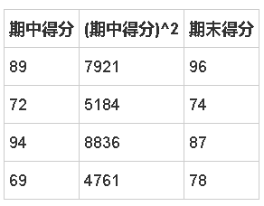

第 16 题
有 4 名学生，他们的期中和期末成绩如下。

用 hθ(x)=θ₀+θ₁x₁+θ₂x₂ 预测期末成绩，其中 x₁ 是期中分数，x₂ 是期中分数的平方。对 x₂ 列做均值归一化，即减去本列均值，再除以本列的极差（最大值减最小值）。第 4 条样本变换后的 x₂ 值是多少？提示：第 1 条样本的期中分是 89，期末分是 96。查看计算步骤与答案
- 平方特征列为 7921、5184、8836、4761。先求本列均值：(7921+5184+8836+4761)÷4=6675.5。
- 按题意求本列极差：最大值 8836 减最小值 4761，结果是 4075。
- 第 4 行的平方特征是 4761。先减均值，再除以极差，结果为 (4761−6675.5)÷4075≈−0.4698。
题册勘误 题干的预测目标按表和特征列整理为期末成绩。原解析使用了离均差平方和的平方根作分母。题干明确要求极差，按极差计算，结果也约为 −0.47。